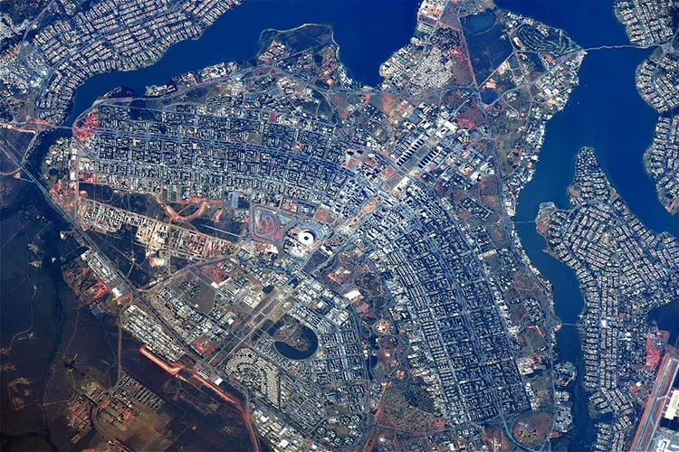

Brasília:

Localização: Brasília/Distrito Federal/Brasil
Ano de inscrição:1987
Conceito:
Planejada ao longo de um eixo monumental leste-oeste, atravessado por um eixo norte-sul curvado para acompanhar a topografia como uma via de transporte, Brasília é um exemplo definitivo do urbanismo modernista do século XX. Criada como capital do Brasil na região centro-oeste do país, de 1956 a 1960, como parte do projeto de modernização nacional do presidente Juscelino Kubitschek, a cidade uniu ideias de grandes centros administrativos e espaços públicos com novas ideias de vida urbana, promovidas por Le Corbusier em blocos de apartamentos de seis andares (quadras) sustentados por pilares que permitiam que a paisagem fluísse por baixo e ao redor deles. O planejamento da cidade destaca-se pela notável congruência entre o projeto urbano de Lucio Costa (o 'Plano Piloto') e as criações arquitetônicas de Oscar Niemeyer, refletida de forma mais marcante na interseção entre os eixos monumentais e de vias públicas, que se configura como fator determinante do esquema urbano da cidade e sublinha o caráter representativo da Praça dos Três Poderes e da Esplanada dos Ministérios, manifestando-se também na geometria do Congresso Nacional e na nova abordagem da vida urbana corporificada nas Unidades de Vizinhança e seus respectivos Superquadras.
História:
A ideia de transferir a capital brasileira para o interior do país existia desde o período colonial, mas só saiu do papel sob o comando do presidente Juscelino Kubitschek, que promoveu sua construção entre 1956 e 1960. Projetada pelo urbanista Lúcio Costa (Plano Piloto) e pelo arquiteto Oscar Niemeyer, a cidade foi erguida no Planalto Central por milhares de operários vindos de todo o país, os chamados candangos. Inaugurada em 21 de abril de 1960 para centralizar a administração política e integrar a economia nacional, Brasília destaca-se internacionalmente por seus traços modernistas inovadores, o que lhe garantiu o título de Patrimônio Mundial pela UNESCO em 1987.